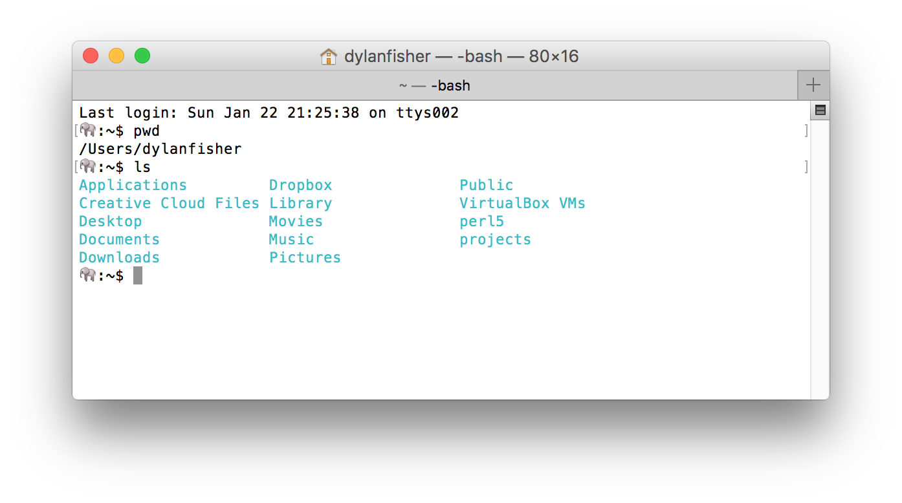

Hello, World!
Part 1
Version Control
git
The name "git" was given by Linus Torvalds when he wrote the very first version. He described the tool as "the stupid content tracker".
Installing git
- Open terminal
- type
git - Install xcode command line tools if necessary
- Once installed, type
gitagain and you should see git's help text
Configuring git
https://help.github.com/articles/setting-your-email-in-git/
git config --global user.name "Billy Everyteen"
git config --global user.email "your_email@example.com"

GitHub
GitHub is a web-based Git or version control repository and Internet hosting service. It offers all of the distributed version control and source code management (SCM) functionality of Git as well as adding its own features.
Create a GitHub account using your newschool username and email address.
You'll use this repository to store code and submit projects for both studio and lab sections of this class. Additionally, you'll use GitHub Pages to make your projects and files publicly accessible over the web.
Part 2
Text Editor

Sublime Text
Free to try, cross-platform, fast, customizable.
Customizing Sublime Text
This is my text editor. There are
many like it, but this one is mine.
Consistent user preferences
Add the following to your user preferences, located in:
Sublime Text > Preferences > Settings – User
{
"draw_white_space": "all",
"tab_size": 2,
"translate_tabs_to_spaces": true,
"trim_trailing_white_space_on_save": true,
"word_wrap": false,
"default_line_ending": "unix",
"ensure_newline_at_eof_on_save": true,
"highlight_line": true,
"highlight_modified_tabs": true,
"open_files_in_new_window": false,
"scroll_past_end": true,
}
User keyboard shortcut preferences
Add the following to your user keyboard shortcut preferences, located in:
Sublime Text > Preferences > Key Bindings – User
[
// swap the keybindings for paste and paste_and_indent
{ "keys": ["super+v"], "command": "paste_and_indent" },
{ "keys": ["super+shift+v"], "command": "paste" },
]
Basic keyboard shortcuts
Command + P # Goto Anything
Command + Shift + P # Command Pallette
Command + D # Select next occurrence
Click here for additional Sublime Text shortcuts and tips, complete with animated gifs.
Extend Sublime Text with Package Control
The Sublime Text package manager that makes it exceedingly simple to find, install and keep packages up-to-date.
Follow the installation instructions to install Package Control within Sublime Text 3.
Install plugins
Use the Command Pallette to install the following two plugins, by typing "Pack Install". Press enter when "Package Control: Install Package" is highlighted.
Once the list of packages is displayed, type the name of the package you want to install. Install these two packages:
- Emmet
- Sidebar Enhancements
Part 3
Terminal
Navigating the terminal
With a few basic Unix commands, navigating the terminal is easy.
Don't be afraid to type ls and pwd all over the place. This is how you know where you are and what file contents are in the directory.
ls # list directory contents
pwd # return working directory name
cd # change directory
mkdir # make directory
Create a projects directory
In the terminal, navigate to your user's root directory and create a new directory named "projects", using the following commands:
cd ~ # change directory to user's root
mkdir projects # create new directory named "projects"
cd projects # enter the new directory
GitHub Pages
Free hosting for your static HTML projects. Hosted directly from your GitHub repository. Just edit, push, and your changes are live.
Follow the instruction on pages.github.com to set up a "User or organization site" using your newschool username. Set up your repo in the new projects directoy we just made.
Three commands to remember!
git add -a
git commit -m "My message"
git push
- Add all files
- Commit the files with a descriptive message
- Push the files to GitHub
Basic HTML elements
https://www.tutorialspoint.com/html/html_basic_tags.htm
h1, h2, h3, h4, h5, h6
p
div
span
hr
br
pre